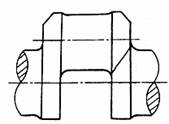
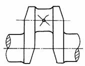
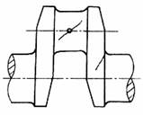
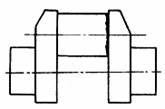

|
破 坏 形 式 |
特 征 |
主
要 原 因 |
|
 |
裂纹最初常发生在主轴颈或连杆轴颈与曲柄臂过渡圆角处应力集中严重点，随后逐渐发展成横断曲柄臂的疲劳裂纹 |
1．由于曲轴过渡圆角太小，曲柄臂太薄，过渡圆角加工不完善所致 2．曲轴箱或支承刚度太小，引起附加弯矩过大 3．由于曲轴箱刚度不够，主轴颈变形太大，引起不均匀磨损，造成不同轴，致使附加弯矩过大。这时断裂常发生在运行较长时间之后 |
|
 |
裂纹起源于油孔，沿与轴线呈45°方向发展 |
1．由于过大的扭转振动，引起附加应力 2．油孔边缘加工不完善，或孔口过渡圆角太小，引起过大的应力集中 |
|
 |
裂纹起源于过渡圆角或油孔，且只有一个方向裂纹，裂纹与轴线呈45° |
1．由于不对称交变转矩引起最大应力，致使疲劳破坏 2．圆角加工不好，及热加工工艺不完善，造成材料组织不均匀 3．油孔孔口圆角加工不完善 4．连杆轴颈太细 |
|
 |
裂纹沿过渡圆角周向同时发生，断口呈径向锯齿形 |
由于圆角太尖锐，引起过大的应力集中 |